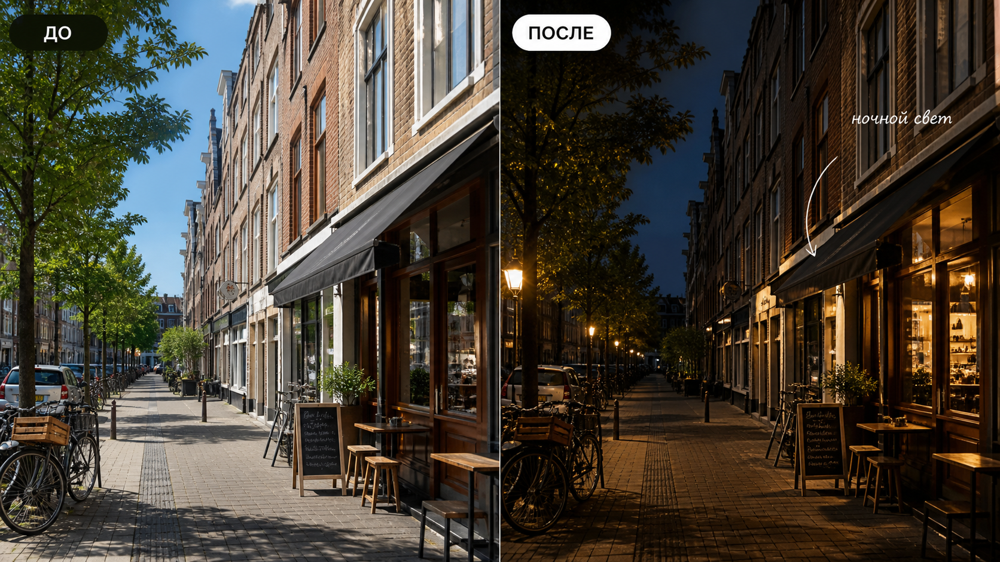

Промтзилла
День-в-ночь хорошо работает для улиц, интерьеров и пейзажей, если не просто затемнить кадр, а добавить реальные источники света.

Пошаговая инструкция
- 1Выбери дневной кадр с понятными окнами, фонарями, витринами или другими потенциальными источниками света.
- 2Загрузи фото в инструмент редактирования фото онлайн.
- 3Опиши желаемое время: сумерки, вечер, глубокая ночь или мягкий городской свет.
- 4Попроси ИИ сохранить геометрию и добавить правдоподобные источники света.
- 5Проверь, чтобы тени, окна, небо и отражения выглядели согласованно.
Пример результата
На обложке показан сценарий до/после: исходное фото и результат, который можно получить через инструмент редактирования фото онлайн.
Промт
RU
Преврати дневную фотографию в реалистичную ночную сцену. Важно: — сохрани все объекты, композицию, перспективу и форму зданий без изменений; — сделай небо и общий свет ночными, но не теряй детали в тенях; — добавь естественный свет из окон, фонарей, витрин или других реальных источников; — согласуй тени, отражения, блики и цветовую температуру; — не добавляй неон, дождь, людей или новые объекты, если я этого не просил; — результат должен выглядеть как настоящая фотография, а не фильтр. Если некоторые источники света выглядят неправдоподобно, предложи более мягкую вечернюю версию.
EN
Turn the daytime photo into a realistic night scene. Important: — preserve all objects, composition, perspective, and building shapes unchanged; — make the sky and overall lighting nighttime, but do not lose shadow detail; — add natural light from windows, street lamps, shop windows, or other real sources; — match shadows, reflections, highlights, and color temperature; — do not add neon, rain, people, or new objects unless requested; — the result should look like a real photograph, not a filter. If some light sources look unrealistic, suggest a softer evening version.
Важно
Простое затемнение делает фото плоским. Проверяй, появились ли реальные источники света и не провалились ли важные детали в чёрный цвет.
Теги